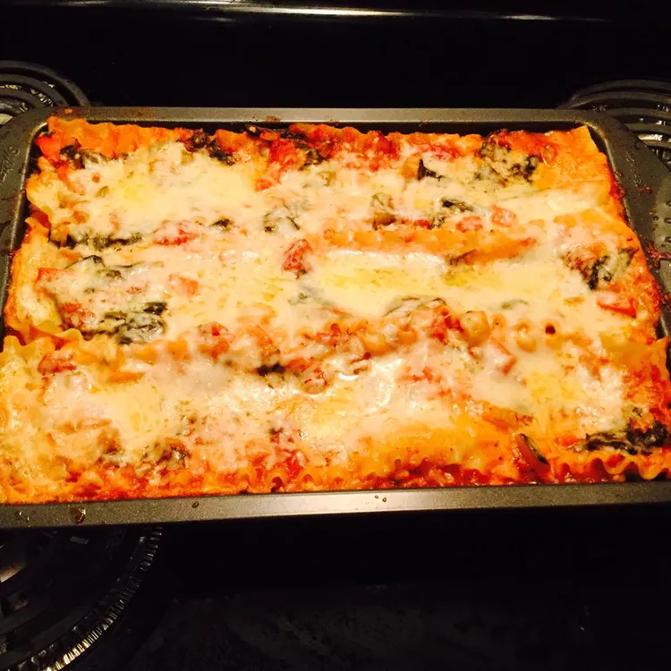

Lasagna Recipe

Description
A colorful and tasty veggie lasagna with plenty of peppers and cheese, with red pepper flakes for zip.
Ingredients
- 1 (16 ounce) package lasagna noodles
- 2 teaspoons olive oil
- ⅔ cup diced red bell pepper
- ⅔ cup diced orange bell pepper
- ⅔ cup diced yellow bell pepper
- ⅔ cup diced green bell pepper
- 1 small yellow onion, diced
- 2 (14.5 ounce) cans diced tomatoes
- 1 (6 ounce) can tomato paste
- 1 ½ cups water
- 1 dash crushed red pepper flakes
- ¼ cup grated Parmesan cheese (Optional)
- 1 (15 ounce) container ricotta cheese
- 1 (8 ounce) package shredded mozzarella cheese
- 4 eggs
- ¼ teaspoon black pepper
- ¼ teaspoon dried oregano, crushed
- ¼ cup grated Parmesan cheese (Optional)
Steps
- Bring a large pot of lightly salted water to a boil. Cook lasagna pasta in boiling water for 8 to 10 minutes, or until al dente. Drain, rinse with cold water, and place on wax paper to cool.
- Cook bell peppers and onion in olive oil in a large sauce pan until onions are translucent. Stir in diced tomatoes, tomato paste, water, and red pepper flakes. More red pepper flakes can be added if spicier sauce is preferred. Simmer for 30 minutes.
- Preheat oven to 375 degrees F (190 degrees C). In a medium bowl, combine Parmesan cheese, ricotta cheese, mozzarella cheese, eggs, black pepper, and oregano.
- Place a small amount of sauce in the bottom of a 9x13 inch baking dish. Reserve 1/2 cup of the sauce. Place three lasagna noodles lengthwise in pan. Layer some of the cheese mixture and the vegetable sauce on top of noodles. Repeat layering with remaining ingredients, ending with noodles. Spread reserved sauce over top of noodles. Sprinkle with grated Parmesan cheese, if desired.
- Cover dish with foil, and bake for 40 minutes or until bubbly. Remove foil during last 10 minutes of baking.
Back